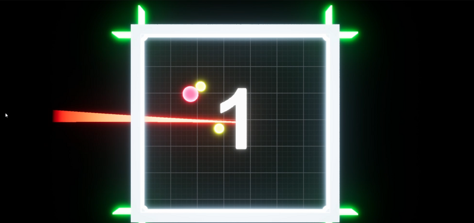
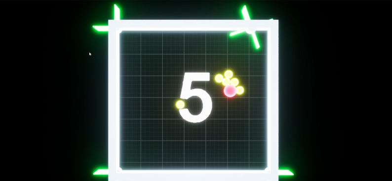
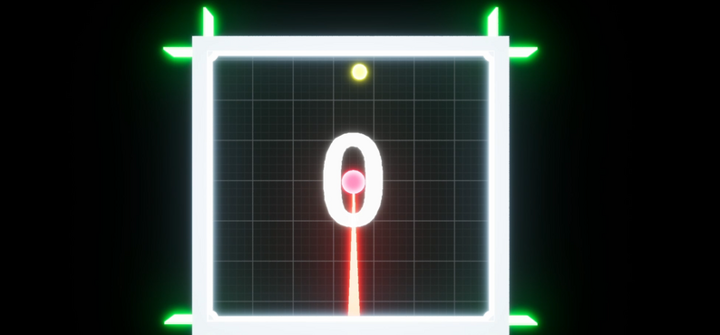

This is a 2D game made in Unreal Engine 4.27. It was a submission for ScoreSpace Jam and also my first game in the challenge of making this type of game.
I created this game using Unreal Engine 4.27 and utilized Unreal Engine visual scripting blueprints and modules to bring it to life.